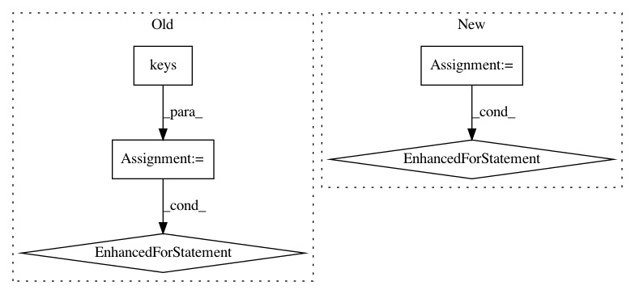

1d532d1cb8b829bdf7055a22c206032ca0b72e46,python/ray/dashboard/metrics_exporter/schema.py,BaseModel,parse_obj,#Any#Any#,32
Before Change
def parse_obj(cls, obj):
assert type(obj) == dict, ("It can only parse dict type object.")
required_args = cls.__slots__
given_args = obj.keys()
// Check if given_args have args that is not required.
for arg in given_args:
if arg not in required_args:
raise ValidationError(
"Given argument has a key {}, which is not required "
"by this schema: {}".format(arg, required_args))
// Check if given args have all required args.
if len(required_args) != len(given_args):
raise ValidationError("Given args: {} doesn"t have all the "
"necessary args for this schema: {}".format(
given_args, required_args))
After Change
def parse_obj(cls, obj):
// Validation.
assert type(obj) == dict, ("It can only parse dict type object.")
for field, schema in cls.__schema__.items():
required, default, arg_type = schema
if field not in obj:
if required:
raise ValidationError("{} is required, but doesn"t "
"exist in a given object {}".format(
field, obj))
else:
// Set default value if the field is optional
obj[field] = default
return cls(**obj)
class IngestRequest(BaseModel):
In pattern: SUPERPATTERN
Frequency: 4
Non-data size: 5
Instances
Project Name: ray-project/ray
Commit Name: 1d532d1cb8b829bdf7055a22c206032ca0b72e46
Time: 2020-04-02
Author: rkooo567@gmail.com
File Name: python/ray/dashboard/metrics_exporter/schema.py
Class Name: BaseModel
Method Name: parse_obj
Project Name: chainer/chainercv
Commit Name: 1cd87b67822c94c49d30ce1eabce792b3db7c272
Time: 2017-06-14
Author: yuyuniitani@gmail.com
File Name: chainercv/links/model/vgg/vgg.py
Class Name: VGG16Layers
Method Name: __init__
Project Name: microsoft/nni
Commit Name: c7d58033db0e25736d33406ed262cb5232d366e8
Time: 2020-02-09
Author: 38930155+chicm-ms@users.noreply.github.com
File Name: src/sdk/pynni/nni/compression/torch/pruners.py
Class Name: AGP_Pruner
Method Name: update_epoch
Project Name: williamFalcon/pytorch-lightning
Commit Name: 9f12ca095ab6e3295bd03fd1e50130a12b11569c
Time: 2021-02-11
Author: carlossmocholi@gmail.com
File Name: pytorch_lightning/trainer/connectors/logger_connector/epoch_result_store.py
Class Name: HookResultStore
Method Name: auto_reduce_results_on_epoch_end